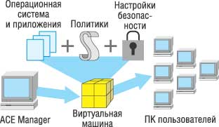
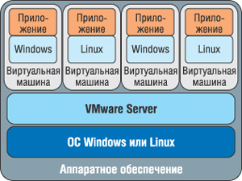
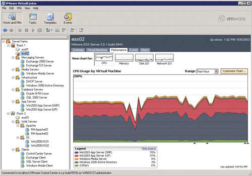
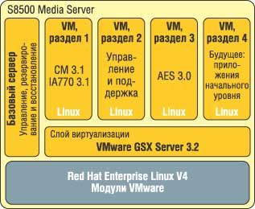
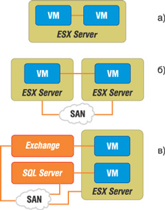

Для начала давайте уточним терминологию предметной области, о которой пойдет речь в этой статье. Основное ее понятие, виртуализация, означает дополнительный уровень абстракции, позволяющий разделить то аппаратное обеспечение, на котором работает ОС, и то, которое она видит и к которому имеет доступ. Интересна эта технология в первую очередь тем, что с ее помощью можно организовать более эффективную утилизацию имеющихся ресурсов и повысить гибкость инфраструктуры. Благодаря виртуализации несколько виртуальных машин с произвольными гостевыми ОС могут работать независимо друг от друга на одной физической машине.
Из других терминов поясним следующие. Хост - это физический компьютер (сервер), на котором установлено ПО виртуализации и работают виртуальные машины; хостовая ОС - соответственно ОС, установленная непосредственно на хосте (это может быть Windows, Linux, VMware ESX Server). Виртуальная машина - объект в программе виртуализации. Для гостевой ОС, т. е. ОС, работающей внутри виртуальной машины, это физическая машина, которая ничем в принципе не отличается от реальной (но аппаратно она отличается от хоста).
Преимущества виртуализации
Организация работы виртуальных машин имеет некоторые особенности, за счет которых и достигаются преимущества виртуализации.
Разделение. Множество приложений и ОС могут корректно работать на одной физической системе. Серверы могут перемещаться с физических серверов в виртуальные машины и обратно. Все ресурсы физической машины рассматриваются как общий пул, откуда они выдаются тем виртуальным машинам, которые в них нуждаются.
Изоляция. Виртуальные машины полностью изолированы от ОС хоста и от других виртуальных машин на этом хосте. Если внутри виртуальной машины произойдет программный сбой, на работоспособности всех прочих это не отразится. Данные не могут неподконтрольно перемещаться между виртуальными машинами, приложения могут общаться только по сконфигурированным сетевым соединениям, что, несомненно, дает выигрыш с точки зрения безопасности.
Инкапсуляция. Полностью работоспособная виртуальная машина представляет собой набор файлов - это файлы дисков виртуальной машины, на которых хранится значимая информация, и файл настроек этой виртуальной машины относительно ПО виртуализации. Как следствие, операции, которые обычно применяют к файлам, естественно применять к виртуальным машинам. Именно поэтому легко выполнять резервное копирование, перемещать, копировать, создавать шаблоны виртуальных машин. Если потребуется, систему целиком (сконфигурированная ОС, приложения, BIOS и аппаратные настройки) за короткое время можно переместить с одного физического сервера на другой без каких-либо дополнительных действий.
Каждая из виртуальных машин имеет свой собственный набор виртуальных комплектующих (процессор, оперативная память, дисковая подсистема, сетевые адаптеры и т. д.), в котором и происходит загрузка и работа гостевой ОС. Она видит один и тот же работоспособный набор оборудования, вне зависимости от конфигурации физического хоста, на котором работает. Стандартизованные виртуальные комплектующие, которые видит гостевая ОС, гарантируют совместимость и работоспособность виртуальной машины независимо от комплектующих хоста.
Сегодня на рынке виртуализации присутствуют продукты нескольких компаний: линейка ПО VMware, Microsoft Virtual Server, HP Virtual Server Environment (VSE) и т. п. Отметим, что компания VMware занимает ведущее положение в области ПО для создания виртуальной инфраструктуры вычислительных систем корпоративного класса. Продукты этой компании мы и рассмотрим подробнее.
Продукты VMware для настольных систем
Крупнейшие мировые компании используют решения VMware, чтобы упростить свою ИТ-инфраструктуру и увеличить эффективность вложений в ИТ. VMware (http://www.vmware.com) в декабре 2003 г. была куплена компанией EMC (http://www.emc.com), однако продолжает выпускать ПО под своей торговой маркой, будучи подразделением EMC.
Инновации и стратегическая важность продуктов VMware регулярно отмечаются многочисленными наградами в области высоких технологий. Ее продукты VMware ESX Server, VMware VirtualCenter и VMware Workstation признаны журналом InfoWorld в январе 2006 г. "Технологией года". Эта премия ежегодно присуждается технологиям, которые, как ожидается, в значительной степени повлияют на стратегию развития ИТ для предприятий, а также корпоративным продуктам, принципиально изменившим ситуацию в области ИТ.
Формирование семейства VMware начиналось с настольных систем, которые и открывают наш обзор. Сравнение этих продуктов проведено в табл. 1.
Таблица 1. Сравнительные характеристики продуктов VMware для настольных систем
| VMware Player | VMware Workstation 5 | VMware ACE | |
| Стоимость, долл. | Бесплатно | 189 | 99 |
| Описание | Позволяет запускать любые виртуальные машины на хостовой ОС Windows или Linux | Мощное полнофункциональное средство для профессионального использования | Продукт уровня предприятия |
| Целевая группа | Кто угодно, включая пользователей из целевой группы Workstation и энтузиастов | Разработчики, тестеры, системные администраторы | Администраторы информационной безопасности на предприятии |
| Запуск нескольких виртуальных машин на одном хосте | + | + | + |
| Создание виртуальных машин | - | + | + |
| Перенос текста и файлов в виртуальную машину, доступ к папке с хоста и виртуальной машины | + | + | + |
| Поддержка разнообразных конфигураций сети | + | + | + |
| Конфигурирование памяти виртуальной машины | + | + | + |
| Доступ к устройствам хоста (CD/DVD-приводы, сетевые карты, USB-устройства) | + | + | + |
| Возможность добавления устройств в виртуальную машину самими пользователями | - | + | - |
| осстановление к состоянию виртуальной машины, заданному "снимком состояния (snapshots) | + | + | + |
| оздание нескольких "снимков для одной виртуальной машины | - | + | - |
| Поддержка двухпроцессорных виртуальных машин | - | + | - |
| Задание настроек безопасности (управление установлением подлинности виртуальных машин, истечением срока действия, шифрованием, защитой от копирования, доступом к устройствам и к сети) | - | - | + |
| Упаковка виртуальных машин в установочный пакет для безопасного распространения на неуправляемый ПК | - | - | + |
| Поддерживаемые хостовые ОС | Windows, Linux | Windows, Linux | Windows |
| Поддерживаемые гостевые ОС | Windows, Linux, Netware, Solaris, FreeBSD | Windows, Linux, Netware, Solaris, FreeBSD | Windows, Linux, Netware |
| Поддержка 64-разрядных гостевых и хостовых ОС | + | + | - |
| Примеры использования | Быстрый и легкий запуск и оценка предустановленных приложений и бета-версий ПО, содержащихся на виртуальных машинах | Разработка, написание, тестирование ПО. Увеличение производительности работы ИТ-специалистов. Запуск учебных, тестовых и т. п. программ в стабильной среде в разнообразном окружении |
Создание защищенной, сконфигурированной и управляемой точки входа на неконтролируемом
ПК. Запуск нескольких защищенных виртуальных машин на одном физическом ПК |
VMware Player
Бесплатное Windows-приложение, позволяющее запускать уже созданные виртуальные машины. Создавать новые оно не позволяет, зато поддерживает запуск виртуальных машин, созданных в таких программах, как VMware Workstation, GSX и ESX Server, а также Microsoft Virtual PC и образы Symantec LiveState Recovery.
Особенность программы - возможность копировать и вставлять (drug&drop) тексты (файлы) между гостевой и хостовой ОС.
Сайт VMware предоставляет неплохой выбор уже готовых виртуальных машин. Например, пакет под названием Browser Appliance представляет собой виртуальную машину с предустановленной ОС и браузером для безопасного Интернет-серфинга. Безопасность достигается за счет того, что любые действия, предпринятые против этой машины извне, применимы только к этой виртуальной машине и никак не влияют на хостовую (здесь - основную рабочую) ОС. На сайте также доступны машины от поставщиков платформ и приложений (Red Hat, Novell, IBM, MySAP и т. д.), с предустановленными ознакомительными версиями соответствующих программ.
VMware Workstation
Первый продукт, выпущенный компанией VMware. На сегодня актуальна версия 5.5 - полнофункциональное приложение, позволяющее создавать и запускать на единственной физической машине множество разнообразных виртуальных машин. Пользователи могут работать и получать доступ к сети в средах Windows, Linux, Netware, Solaris x86, установленных на виртуальных машинах, без перезагрузки или создания множества разделов на жестком диске. VMware Workstation предоставляет дополнительные функции, такие, как оптимизация использования памяти, возможность объединять виртуальные машины в многоузловую сеть и делать многократные "снимки" (snapshots) текущего состояния виртуальной машины. Последняя функция по сути дает возможность выполнить откат изменений в масштабах всей системы, притом с гарантированным сохранением работоспособности. Эта функция доступна для большинства продуктов VMware.
VMware ACE
VMware ACE, The Assured Computing Environment for the Enterprise, - мощный инструмент для администраторов, ответственных за безопасность, обеспечивающий защиту важной информации на компьютерах пользователей и безопасный доступ к данным в сети путем снижения риска, возникающего при обращении к сети неадминистрируемых компьютеров.
Возможности VMware ACE (рис. 1) фактически представляют собой смесь возможностей VMware Workstation и VMware Player с небольшими добавками. Функциональность администраторской части позволяет создавать виртуальные машины с произвольными требованиями к производительности хоста, настройками ОС, набором установленных приложений, временем работоспособности данной виртуальной машины и т. д. Клиентская же часть представляет собой просто средство для запуска этой виртуальной машины.
|  | Рис. 1. Схема элементов VMware ACE.
|
Дополнительные функции дают возможность упаковывать виртуальные машины в самодостаточные пакеты ПО, которые тем или иным путем передаются пользователям, и устанавливать так называемый сервер политик, к которому за обновлением политик (настроек) обращаются все распределенные виртуальные машины VMware ACE, что позволяет гибко управлять развернутой инфраструктурой. Список параметров, контролируемых политиками, весьма обширен. Основное здесь - регулирование доступа к виртуальным машинам через пользователей и группы Active Directory, время жизни виртуальной машины с момента запуска, защита этой виртуальной машины от копирования, доступ к сети с этой виртуальной машины.
Серверные продукты VMware
VMware GSX Server и VMware Server
VMware GSX Server - базовый продукт серверного уровня. VMware Server (рис. 2) почти полностью аналогичен ему по возможностям, но распространяется бесплатно. VMware GSX Server вскоре перестанет продаваться, а VMware Server как раз и придет ему на смену (на момент написания статьи он находился в стадии бета-тестирования). Следует отметить, что возможности этой программы не урезаны, как мы привыкли ожидать от бесплатного предложения, а почти не уступают (и в чем-то даже превосходят) возможности GSX Server.
|  | Рис. 2. Структура VMware Server.
|
Например, для VMware Server заявлена поддержка Virtual SMP (что означает создание многопроцессорных виртуальных машин - технология, ранее доступная только в ESX Server), поддержка (пока экспериментальная) Intel Virtualization Technology и поддержка 64-разрядных ОС. Нацелен же этот продукт на те компании, которые еще только готовятся опробовать преимущества виртуализации.
VMware Server позволяет перенести физические серверы в виртуальные машины и получить начальное представление о возможностях виртуальной инфраструктуры. С помощью VMware Server компании могут развернуть новые серверы, не вложив ни копейки в "железо", запускать разнообразные ОС на одной и той же аппаратной платформе, переносить виртуальные машины с одного физического хоста на другой без перенастройки.
Продукт подходит для разработки ПО и тестирования, предоставлений ознакомительных версий продуктов в настроенных и отлаженных виртуальных машинах, запуска устаревших приложений и ОС.
VMware ESX Server и VirtualCenter
VMware ESX Server - самый технологически продвинутый продукт виртуализации, его место - на серверах центров обработки данных. Главное отличие его от прочих продуктов VMware в том, что ESX Server - операционная система, т. е. он ставится на "голое железо" (табл. 2). Плюс такого решения - не надо тратить ресурсы хоста на промежуточную ОС. В минусы можно записать меньшее количество официально поддерживаемых систем (тот же GSX Server работает на любом оборудовании, где можно установить Windows или Linux). Тем не менее список поддерживаемых систем достаточно велик и продолжает расти.
На сервере с установленным ESX Server одновременно работают два компонента: ядро (vmkernel) - именно этот компонент, написанный программистами VMware, распределяет ресурсы между виртуальными машинами, и слегка модифицированная Red Hat Linux 7.2 - управляющий элемент, выступающий в роли Service Console. Service Console предоставляет интерфейс командной строки. Именно в среде Service Console работает Web-сервер Apache, на базе которого построен графический Web-интерфейс управления ESX Server.
Но если в нашем ведении несколько серверов, управлять каждым отдельно неудобно, и на сцену выходит продукт VirtualCenter (рис. 3). Это Windows-приложение, позволяющее эффективно управлять всеми системами ESX, GSX и (в следующих версиях) VMware Server. Управление через VirtualCenter включает в себя изменение настроек хостов, мониторинг как хостов, так и виртуальных машин, и полное управление всеми виртуальными машинами на управляемых хостах.
|  |
| Рис. 3. "Снимок" экрана VirtualCenter.
|
Второй важный аргумент в пользу приобретения VirtualCenter - поддержка VMotion, процесса переноса работающей виртуальной машины с одного хоста на другой без ее выключения. За счет этого можно более гибко использовать ресурсы нескольких хостов, перемещая виртуальные машины с более загруженных серверов на менее загруженные. Появляется также возможность отключать серверы, например, для обслуживания, без отключения работающих на них виртуальных машин, т. е. простаивание сервера проходит практически безболезненно для бизнес-процессов. Процесс VMotion требует SAN-инфраструктуры.
ESX Server позволяет создать до восьми виртуальных коммутаторов. Эти объекты используются для связи виртуальных машин одного хоста. К каждому коммутатору можно привязать одну или несколько физических сетевых карт, что позволит виртуальным машинам хоста общаться с узлами сети. Виртуальные коммутаторы поддерживают IEEE 802.1Q VLAN Tagging.
Важное свойство - возможность создать систему правил распределения ресурсов хоста между виртуальными машинами (под ресурсами подразумеваются процессорное время, оперативная память, доступ к дисковой подсистеме и сети). Можно задавать гарантируемые минимумы и максимумы выделяемой оперативной памяти или процессорного времени и устанавливать для каждой машины вес, определяющий, какая доля ресурса достанется этой виртуальной машине, если ресурса не хватит на всех.
В программе также присутствуют широкие возможности мониторинга и обработки событий. Например, в качестве реакции на недостаток какого-то ресурса можно задать различные действия, такие, как выключение виртуальных машин, перевод их в состояние паузы (suspend mode), выполнение произвольного скрипта, изменение весов виртуальных машин и т. д.
Таблица 2. Сравнительные характеристики VMware Server и ESX Server
| VMware Server | VMware ESX Server & VirtualCenter | |
| Описание продукта | Бесплатная программа для переноса физических серверов в виртуальные машины | Высокопроизводительная платформа для виртуализации |
| Рабочее окружение | Разработчик, отдел, рабочая группа, филиал | Центр обработки данных предприятия |
| Поддержка аппаратного обеспечения | Совместимость обеспечивается ОС хоста | Требуются драйверы для VMware ESX Server |
| Типовое число одновременно работающих виртуальных машин | 2-4 на ядро | 4-8 на ядро |
| Типичная система | 2-16 процессоров | 2-16 процессоров |
| Поддержка двухпроцессорных виртуальных машин (Virtual SMP) | + | + |
| Оперативная память хоста | До 64 Гбайт (ограничения ОС хоста) | До 64 Гбайт |
| Web-интерфейс управления серверами | + | + |
| Удаленная консоль к виртуальным машинам | + | + |
| Поддержка скриптов | COM и Perl | COM и Perl |
| Централизованное управление (через VirtualCenter) | - (будет в следующих релизах) | + |
| Создание шаблонов виртуальных машин | - | + |
| Группировка сетевых контроллеров | На уровне ОС хоста | + |
| Кластеризация виртуальных машин | + (только между виртуальными машинами одного хоста) | + (в том числе между виртуальными машинами разных хостов) |
| Подключение к системам хранения SAN | В зависимости от возможностей хоста | + |
| Перенос работающей виртуальной машины между хостами (VMotion) | - | + |
| Корректное управление правами доступа на уровне учетных записей Windows (через VirtualCenter) | - | + |
| Улучшенная сетевая безопасность путем помещения виртуальных машин одного хоста в разные VLAN | - | + |
| Операционная система хоста | Linux и Windows 2000/2003 Server | Не требуется. Устанавливается на "голое железо |
| Нацелен на задачи | Разработка и отладка ПО предприятия. Создание полностью настроенных виртуальных машин с предустановленным ПО. Запуск устаревших ОС. Оптимизация загрузки сервера |
Консолидация серверов. Обеспечение непрерывности бизнес-процессов |
| Типичные применения | Интранет, сервисные серверы, прикладные серверы | Web-приложения, "тяжелые продукты (SAP, Oracle, Siebel и т. п.), файл- и принт-серверы, контроллеры домена, серверы электронной почты и т. д. |
P2V Assistant
Первая часть названия этого продукта представляет собой аббревиатуру от Physical To Virtual. Программа предназначена для удобного и простого переноса ОС с физического сервера внутрь виртуальной машины.
Сценарии применения
Само собой, виртуальные машины - незаменимый инструмент для тестов. В числе их потребителей - разработчики и отладчики ПО, администраторы крупных компаний, а также те, кому могут понадобиться настройка и тестирование приложений, компоненты которых работают на нескольких компьютерах, тестирование обновлений приложений и ОС (и все это на одном ПК), демонстрации возможностей ПО (даже требующих нескольких машин) на одном ПК.
Очень удобно, что все изменения, внесенные как пользователем, так и программами, легко откатить, вернув систему в исходное, "чистое" состояние. Возьмем, например, отладку ПО - отладчик может в любой момент после сбоя за секунды вернуться к исходному состоянию виртуальной машины. Эти возможности могут быть интересны и в учебных процессах, где студентам периодически нужны "чистые", работоспособные машины с корректными настройками для экспериментов с различными ОС, приложениями и т. п., притом безопасных для хостовой ОС.
Виртуальные машины обеспечивают быстрое решение для служб help desk - если у пользователя возникли проблемы с настройками его рабочей виртуальной машины, ему очень легко дать новую, с корректными настройками. В этом случае, конечно же, требуется развертывание соответствующей инфраструктуры. У компании VMware есть продукт именно этого класса - VMware ACE, и мы рассмотрим ниже пример его использования.
Некоторым организациям часто требуется предоставлять сторонним специалистам доступ в корпоративную сеть с их ноутбуков. Обычно при этом приходится решать проблемы, связанные с отсутствием на ноутбуках настроек доступа и специализированного ПО, опасностью вирусного заражения с них и т. д. В случае же развернутой инфраструктуры VMware ACE картина намного более отрадна для администратора организации: человек, которому необходимо получить доступ, обращается, например, на внутренний общедоступный портал в сети компании. Оттуда он может получить одну из нескольких (отличающихся набором ПО, настройками, системными требованиями) виртуальных машин VMware ACE. Они представляют собой виртуальные машины с правильно настроенной ОС, установленными приложениями, сконфигурированным антивирусом и т. п. Кроме того, администратор с помощью механизма политик может задавать для этой конкретной виртуальной машины время жизни, настройки безопасности, настройки защиты от копирования и многое другое.
Эти возможности могут быть интересны компаниям, которые разрешают своим сотрудникам удаленную работу с домашнего ПК. Сценарий в этом случае тот же самый - работник получает виртуальную машину, настройки которой он изменить не может, перенос информации из которой в его хостовую ОС запрещен политиками VMware ACE и т. д.
Резюмируя, можно сказать, что VMware ACE используется для:
- создания безопасных и настроенных точек доступа в сеть;
- обеспечения безопасности информации на отдельном ПК;
- одновременного запуска нескольких защищенных и настроенных сред для доступа в локальную сеть/несколько сетей на одном ПК;
- снижения себестоимости бизнес-процессов.
Виртуализация серверных задач предполагает некоторое количество серверов, в которых все или большая часть ресурсов не используются. Тем не менее, в силу каких-либо причин под эти задачи были выделены отдельные физические серверы (например, если существует жесткая рекомендация давать под отдельную задачу выделенную копию ОС). Это могут быть контроллеры доменов, DHCP-серверы, серверы приложений, нагрузка на которые редка (например, сервер базы данных, который нагружают раз в месяц при составлении отчетов), и т. д. В этом случае перенос приложений на виртуальные машины позволит существенно сэкономить на аппаратном обеспечении.
Например, компания Avaya предлагает комплексное решение сервера телефонии для небольших компаний (рис. 4). Оно представляет собой сервер с ОС Linux, к которому подключены соответствующие внешние устройства. На сервере также установлен VMware GSX Server, под управлением которого работают четыре виртуальные машины. ПО трех виртуальных машин выполняет свою собственную функцию; четвертая виртуальная машина оставлена под задачи пользователя. Преимущества этого решения - крайняя простота настройки. Пользователю не приходится заниматься ни установкой ОС Linux, ни ее конфигурированием, ни настройкой приложений (кроме самой минимальной). К тому же сервер телефонии этой компании избавлен от общей ОС как от единой точки отказа (имеется в виду, что ОС, в которой работает преимущественно одно приложение, VMware GSX Server, будет более стабильна, чем система, в которой функционирует несколько приложений, управляющих телефонией).
|  | Рис. 4. Схема сервера телефонии компании Avaya.
|
По информации, опубликованной на сайте VMware, консолидация составляет в среднем 12 виртуальных машин на одну физическую. Если учесть возможность объединения ресурсов нескольких хостов (на основе технологии VMotion), то виртуализация серверов дает на выходе экономичную, эффективно управляемую и безопасную инфраструктуру.
Отдельная тема - построение решений высокой готовности. Использование виртуальных машин на ESX Server дает несколько вариантов кластеризации (рис. 5). Так, Cluster-In-a-Box предполагает кластерные отношения между двумя виртуальными машинами на одном хосте и защищает от программных сбоев. Это преимущественно тестовое решение, поскольку сам хост становится единой точкой отказа.
Cluster-Across-Boxes - кластеризация виртуальных машин, работающих на разных хостах. Этот вариант кластеризации более интересен в производственной среде. Для его применения требуется инфраструктура SAN.
|  | Рис. 5. Варианты кластеризации: а) Cluster-In-a-Box; б) Cluster-Across-Boxes; в) кластер между физической и виртуальной машинами.
|
Кластерные отношения между физической и виртуальной машинами - очень интересное решение, позволяющее при относительно небольших расходах повысить надежность систем. Можно "кластеризовать" несколько физических серверов с виртуальными машинами на одном ESX Server. В случае сбоя на одной из физических машин кластеризованное приложение поднимается на соответствующей виртуальной машине, а так как все остальные виртуальные машины в этот момент выступают как пассивные узлы кластера, то почти все ресурсы хоста доступны ставшему активным узлу.
И, наконец, есть возможность организовать кластерные отношения между двумя ESX Server. Это обеспечит отказоустойчивое решение, притом не потребуется дополнительных настроек или ПО при создании новых виртуальных машин на кластеризуемом хосте.
В России, на взгляд автора, в первую очередь стоит присмотреться к продукту VMware Server. Он интересен очень богатыми возможностями и при этом бесплатен. Последний фактор выделяет его среди предложений конкурентов, основное из которых - Microsoft Virtual Server.
VMware Server поддерживает широчайший спектр гостевых ОС, отличается богатыми возможностями управления виртуальными машинами, продвинутыми технологическими характеристиками и простотой внедрения. Как ни странно, но платный продукт VMware Workstation по своим возможностям фактически не превосходит это бесплатное решение.
Продукт VMware Server можно рассматривать и как ступеньку к следующему шагу виртуализации - внедрению ESX Server. Виртуальные машины, созданные в VMware Server, легко перенести на хост под управлением ESX Server. В данном варианте возможно разделить ресурсы нескольких серверов между большим количеством виртуальных машин. Это обеспечивает экономию на аппаратном обеспечении, так как организация одновременно получает и выделенную копию ОС под каждое приложение, и в серверной у нее нет серверов, чьи процессоры загружены на 3% в течение 99% времени. Сегодня ни один из поставщиков продуктов виртуализации не предлагает продуктов такого уровня. При этом решение для виртуальной инфраструктуры (связка ESC Server и VirtualCenter) представляет собой зрелую и отлаженную систему, с большим количеством внедрений по всему миру и довольно существенным числом реализованных проектов в России.
Наконец, стоит отметить продукт VMware ACE. Возможности его представляются особо привлекательными в связи с повышением внимания к предотвращению информационных угроз, исходящих от сотрудников предприятий и от лиц, которым предоставляется временный доступ в корпоративную сеть.
Обучение - ключевое условиеВ 2005 г. компания VMware начала активное продвижение своих решений на российский рынок. Сегодня в России есть дистрибьютор ее продукции - компания OCS (http://www.ocs.ru), есть и авторизованный учебный центр VMware, открытый на базе учебного центра "Микроинформ" (http://www.microinform.ru). Обучение - ключ к максимальной отдаче от вложений средств, поскольку позволяет задействовать возможности оборудования и ПО "на все 100%". VMware предлагает единую во всем мире программу обучения и сертификации по своим продуктам и решениям на их основе. Программа рассчитана в первую очередь на технических специалистов - партнеров, пользователей и консультантов. Ключевой курс этой программы, "Построение виртуальной инфраструктуры с помощью ESX Server и VMware VirtualCenter", ориентирован как на администраторов ESX Server, так и на пользователей VMware VirtualCenter. Очное обучение на данном курсе - обязательное условие участия в программе сертификации VMware Certified Professional (VCP). Второе условие - успешный результат сертификационного теста, который можно сдать в международном центре тестирования специалистов Pearson VUE. В учебном центре "Микроинформ" проводится обучение системных администраторов и системных инженеров, которые отвечают за интеграцию, администрирование и управление ESX Server. В числе первых в программе обучения приняли участие специалисты компаний МТС, ЦБ РФ, "СУАЛ-Холдинг", IBS, SoftLine Trade, "АйТи", КРОК, ЛАНИТ и т. д. |